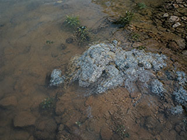

近日，市自来水公司、市卫生防疫站会同我所对北郊水库进行了夏季水质调查，重点了解近期部分时段原水出现土腥味的原因。
调查中发现，库岸部分浅水地带及裸露沉积物表面有灰白色斑片状附着物。工作人员分别采集了库区表层水、底层水、入库水以及附着物和沉积物样品。现场测定和常规水质检验结果表明，除部分水样土腥味较明显外，其他项目未见明显异常。
微生物研究室将对采集样品作进一步培养、分离和观察，对灰白色附着物的组成及水体异味来源进行分析。

近日，市自来水公司、市卫生防疫站会同我所对北郊水库进行了夏季水质调查，重点了解近期部分时段原水出现土腥味的原因。
调查中发现，库岸部分浅水地带及裸露沉积物表面有灰白色斑片状附着物。工作人员分别采集了库区表层水、底层水、入库水以及附着物和沉积物样品。现场测定和常规水质检验结果表明，除部分水样土腥味较明显外，其他项目未见明显异常。
微生物研究室将对采集样品作进一步培养、分离和观察，对灰白色附着物的组成及水体异味来源进行分析。
| 版权所有:江河省科学院五义生物研究所 ©2001 Wuyi Institute of Biology, Jianghe Academy of Sciences |
| 网站信箱:webmaster@wyib.ac.cn | 联系电话：(0582)7361026 | 地址:江河省五义市义城区北郊科学路8号 946200 |
| 本网站为虚构故事互动作品，页面所涉机构、人物、报刊与文献均为虚构内容，请勿作为现实资料使用 |